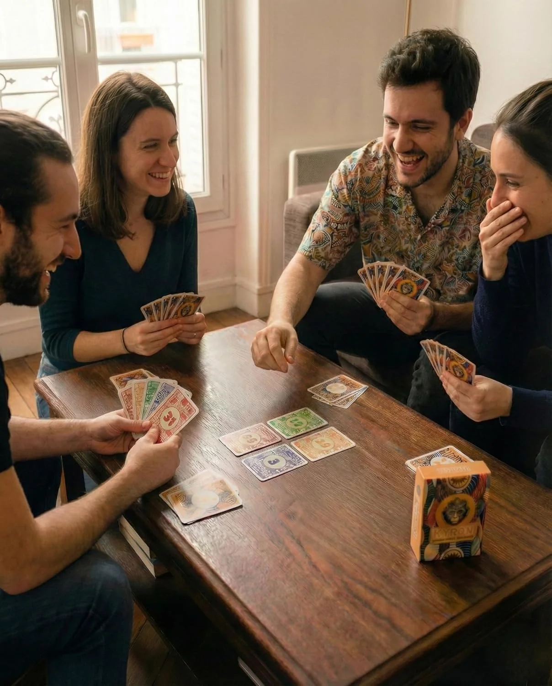

Soirée & Ambiance
Jeu de cartes pour l'apéro : KYRAN en pratique
Déroulé d'une partie, nombre de joueurs, durée et comparaison honnête avec d'autres jeux d'apéro.
KYRAN convient à un apéro de 3 à 6 personnes prêtes à rester assises une demi-heure autour d'un vrai jeu. C'est un jeu de plis à pari obligatoire, pas un jeu de réflexes : il demande un peu d'attention, mais ses règles de base s'expliquent en quelques minutes et personne n'attend sur le côté pendant que les autres jouent. Pour un groupe plus nombreux ou des invités qui arrivent au compte-gouttes, d'autres jeux sont mieux placés ; cette page vous aide à trancher.

KYRAN en bref, vu depuis la table d'apéro
D'après l'éditeur, KYRAN se joue de 3 à 6 joueurs, dure environ 30 minutes et s'adresse aux joueurs dès 8 ans. Le matériel tient dans une boîte de 11,5 × 8,5 × 2,8 cm qui pèse 175 g : pas de plateau, pas de pions, pas de feuille de score. Chaque joueur aligne simplement ses cartes Vie devant lui, ce qui laisse de la place sur la table.
Le principe tient en une phrase : à chaque manche, chacun annonce le nombre exact de plis qu'il va gagner et perd des cartes Vie s'il se trompe. Le dernier joueur à parler n'a pas le droit de faire tomber la somme des annonces pile sur le nombre de plis, si bien qu'au moins un joueur rate son pari à chaque manche. Les règles complètes sont sur la page règles de KYRAN.
Déroulé d'une partie en apéro
1. Installation, deux minutes
À 3 ou 4 joueurs, gardez les cartes Pouvoir de valeur 11, 27, 20 et 3 ainsi que la carte Mystique ; à 5 ou 6 joueurs, jouez avec toutes les cartes Pouvoir. Chacun reçoit 5 cartes Vie qu'il empile devant lui, la 5 étoiles au-dessus. Mélangez les cartes Nombre et Pouvoir, puis désignez un donneur : le rôle passera au joueur suivant, dans le sens des aiguilles d'une montre, à chaque manche.
2. Explication en deux minutes
Trois phrases suffisent pour démarrer : on annonce le nombre exact de plis qu'on va gagner ; le dernier à parler ne peut pas équilibrer la table ; chaque pari raté coûte autant de cartes Vie que l'écart. Les cartes Pouvoir et la Mystique s'expliquent au moment où elles sortent. Avec des invités qui découvrent les jeux de plis, jouez la première partie en variante d'initiation, sans cartes Pouvoir ni Mystique, puis ajoutez-les à la suivante. Autre option : lancer la vidéo Ludochrono de 5 minutes ou laisser chacun s'essayer à l'Initiation avant la soirée.
3. Les manches, de 7 à 2 cartes
On distribue 7 cartes à chacun, puis 6, 5, 4, 3 et 2 aux manches suivantes. Les paris se font à voix haute en partant de la gauche du donneur. Exemple à quatre joueurs, dans une manche à 4 cartes : les trois premiers annoncent 1, 2 et 0, soit 3 plis. Le quatrième ne peut pas dire 1, car la somme atteindrait 4 ; il choisit 0, 2, 3 ou 4, et c'est souvent là que la table se met à commenter. Les plis se jouent ensuite à la suite : la carte la plus forte l'emporte, le gagnant ouvre le pli suivant et les cartes Pouvoir agissent dès qu'elles sont posées.
4. La manche Mystique
Après la manche à 2 cartes arrive la manche Mystique : chacun prend une seule carte et la tient contre son front, visible des autres et invisible pour lui. On parie alors 1 (je gagne le pli) ou 0, puis tout le monde abat sa carte en même temps. Les cartes Pouvoir n'ont pas d'effet pendant cette manche. Un testeur Amazon décrit ces manches spéciales comme une source de rires et de surprises à table.
5. Fin de partie et revanche
La partie s'arrête dès qu'un joueur a perdu toutes ses cartes Vie. Celui qui en garde le plus devient Maître des Mystiques ; en cas d'égalité, les survivants se départagent lors d'une dernière manche Mystique. Pour une revanche, chacun reprend ses 5 cartes Vie et l'on remélange.
Combien de joueurs, quelle durée ?
KYRAN se joue de 3 à 6 joueurs, jamais à deux : la contrainte sur le dernier pari perd son intérêt à deux. Au-delà de six invités, il faut un second jeu ou un titre prévu pour les grandes tablées ; la sélection de jeux pour grands groupes en propose plusieurs.
La durée annoncée est d'environ 30 minutes. Elle varie avec la vitesse des annonces et avec le nombre de manches jouées avant qu'un joueur perde sa dernière carte Vie, puisque la partie s'arrête à ce moment-là. Si votre apéro ne laisse que quinze minutes, un jeu court comme Dobble ou Jungle Speed s'y glisse mieux.
Ce qui rend KYRAN adapté à l'apéro, et ce qui l'est moins
Points forts
- Matériel léger : une boîte de 175 g, ni plateau ni pions.
- Score visible : les cartes Vie remplacent la feuille et le crayon.
- Fin nette : la partie s'arrête quand un joueur tombe à zéro, personne ne reste de côté pendant que les autres continuent.
- Échanges permanents : paris annoncés à voix haute, bluff, manche Mystique.
- Entrée en matière progressive grâce à la variante d'initiation.
Limites
- Il faut suivre ses plis pour tenir son pari : le jeu supporte mal une conversation qui accapare toute l'attention.
- Les places sont fixes : un invité qui arrive en cours de partie attend la suivante.
- 3 à 6 joueurs seulement.
- La donne compte : un avis Amazon rappelle qu'une mauvaise main reste une mauvaise main.
- Aucun réflexe ni mouvement : pour se défouler, d'autres jeux conviennent mieux.
KYRAN face à d'autres jeux d'apéro
Quatre jeux reviennent souvent sur les tables d'apéro. Le tableau reprend les chiffres indicatifs de nos fiches (joueurs, durée et âge indiqués par les éditeurs).
| Jeu | Joueurs | Durée | Âge | Principe |
|---|---|---|---|---|
| KYRAN | 3 à 6 | ~30 min | 8+ | Plis et paris |
| Skull | 3 à 6 | ~30 min | 10+ | Bluff et enchères |
| Jungle Speed | 2 à 10 | ~15 min | 7+ | Réflexes |
| Dobble | 2 à 8 | ~15 min | 6+ | Observation |
| Uno | 2 à 10 | ~20 min | 7+ | Défausse par couleur ou numéro |
Skull a le même effectif et la même durée que KYRAN, mais son bluff repose sur quelques cartes par joueur (des fleurs et un crâne) et sur des enchères, sans plis ni pouvoirs. Il s'explique plus vite ; KYRAN offre davantage de décisions d'une manche à l'autre. D'autres idées dans les jeux de bluff et de pari.
Jungle Speed repose sur la vitesse de réaction autour d'un totem et accueille jusqu'à dix joueurs, bien au-delà de KYRAN. En contrepartie, il ne laisse aucune place au pari ni à la lecture du jeu des autres.
Dobble consiste à repérer le symbole commun à deux cartes avant les autres. Il démarre en quelques secondes avec n'importe quel invité dès 6 ans ; KYRAN demande un peu plus de mise en route mais propose des décisions que Dobble n'a pas.
Uno est très répandu : on se défausse en suivant la couleur ou le numéro. Il fonctionne avec de grandes tablées, sans pari ni bluff structuré. Si votre table adore Uno, KYRAN est plutôt un deuxième jeu qu'un remplaçant ; voir aussi les alternatives à Uno.
Pour une comparaison sur huit jeux, lisez la sélection des meilleurs jeux de cartes pour l'apéro. Si vous cherchez plutôt un jeu pour une soirée entière, consultez les jeux entre amis ; si vous venez de Skyjo, les jeux comme Skyjo.
Notre avis : quand choisir KYRAN ?
Choisissez KYRAN si vous êtes entre trois et six, que la soirée laisse une demi-heure de libre et que votre groupe aime parier et bluffer, surtout si l'un de vous connaît déjà le Tarot Africain ou Wizard. Préférez Dobble ou Jungle Speed si les invités arrivent et repartent, si la table dépasse six personnes ou si l'ambiance est plus bruyante que studieuse. Skull est l'option la plus proche en effectif et en durée quand votre groupe veut un bluff plus léger qu'un jeu de plis.
Questions fréquentes sur KYRAN en apéro
KYRAN est-il vraiment un jeu d'apéro ?
Combien faut-il de joueurs pour jouer à KYRAN en apéro ?
Combien de temps dure une partie ?
Faut-il connaître le Tarot Africain ou le Whist pour y jouer ?
KYRAN convient-il aux enfants lors d'un apéro de famille ?
Quel jeu choisir si mon groupe n'aime pas les jeux de plis ?
Pour aller plus loin
- Les règles complètes de KYRAN, avec la vidéo Ludochrono.
- Le Tarot Africain et la page Whist 22, dont KYRAN s'inspire.
- La FAQ de KYRAN : règles, matériel, comparaisons et achat.
- Le comparatif des jeux de plis si l'idée d'annoncer ses plis vous plaît.
Prêt à défier votre intuition ?
Lancez une partie ce week-end — livraison Prime disponible.